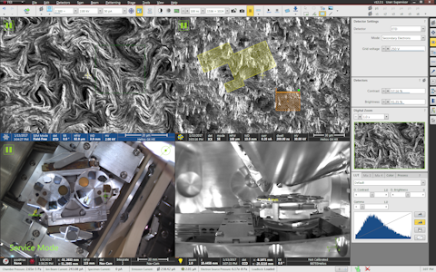

Active view concept
AutoScript shares the concept of an active view with the main user interface application, "Microscope Control".
In this user interface, the screen is divided into four displays (views),
each streaming a video signal from an independent imaging channel.

Each view can be configured with one of the available imaging devices, such as electron beam, ion beam, navigation camera etc.
Only one view is active at any given time, indicated by a highlighted data bar at the bottom of the view.
When activated, the main user interface switches all its control elements to display properties of the imaging device
in the active view.
This concept extends to include the configuration of detectors.
Each view is assigned one of the detectors available on the system,
provided it is compatible with the view's device.
The complete configuration of the detector is stored for the view.
For example, view 1 may be configured with electrons and an ETD detector in Backscatter Electrons mode,
while view 2 can be configured with ions, also with the ETD detector but operating in Secondary Electrons mode.
When image acquisition starts in a given view, the software platform configures the detector with the stored mode and routes the detector signal to the imaging pipeline attached to the view.
AutoScript allows you to control the active view, its device, and detector via dedicated API functions.
To activate view 2 (upper right view):
microscope.imaging.set_active_view(2)
Note that the Microscope Control application immediately reflects this change and updates its user interface accordingly.
Once view 2 is active, we can configure it with an electron beam device:
microscope.imaging.set_active_device(ImagingDevice.ELECTRON_BEAM)
After setting the device, we can assign a detector to the view:
microscope.detector.type.value = DetectorType.TLD
Once the detector is set, we can configure its properties:
microscope.detector.mode.value = DetectorMode.SECONDARY_ELECTRONS
microscope.detector.custom_settings.suction_tube_voltage.value = 240
Note that the new detector configuration is applied only to view 2, other views maintain their original detector configuration.
Many functions present in the AutoScript API that control the state of the microscope are
designed to act on the active view:
-
All image acquisition functions (found under
imaging API branch).
Functions that configure the imaging pipeline
(imaging.scanning_filter
and imaging.lut)
store settings for the combination of the active view and imaging device.
Thus, for instance, filter settings for electrons in view 1 is stored separately from filter settings for ions in the same view.
-
All patterning process control functions (located in the
patterning API branch).
Patterns created with functions patterning.create_* are stored for the active view and device combination.
-
All functions under the
detector API branch.
-
Certain specimen manipulation functions, such as continuous stage movement ("jogging"), rely on important information from the active view.
Column and scanning control functions are excluded from the active-view concept in the AutoScript API.
There are dedicated branches in the API for adjusting
electron beam or
ion beam column settings
at any time, regardless of which beam is the active view configured with.